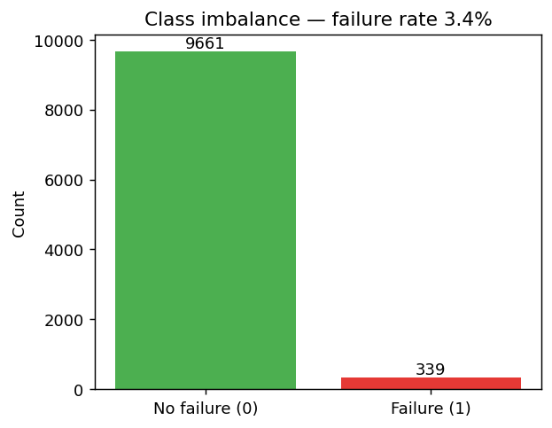
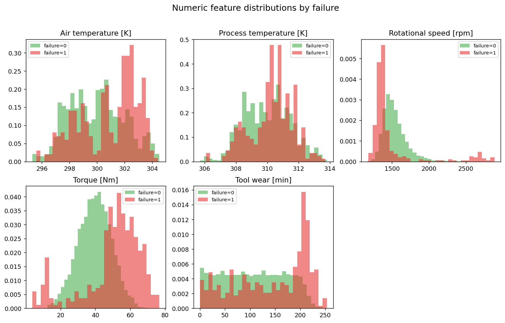
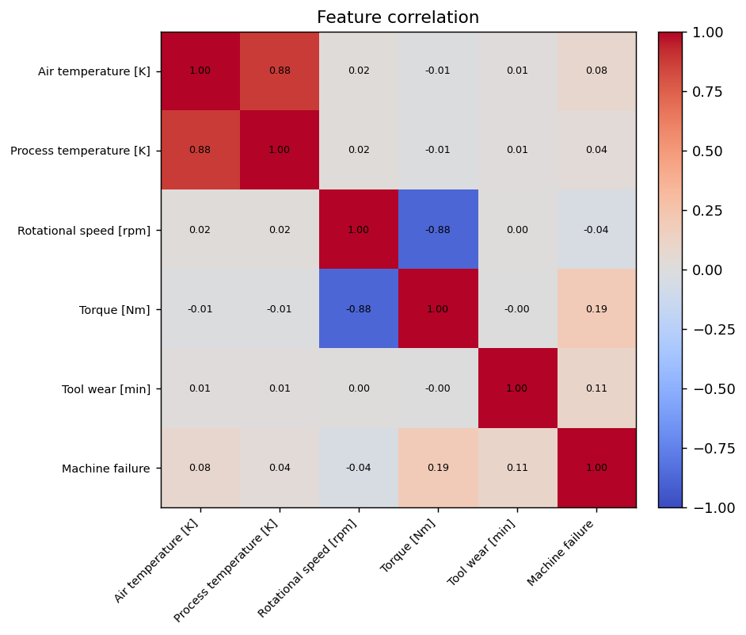
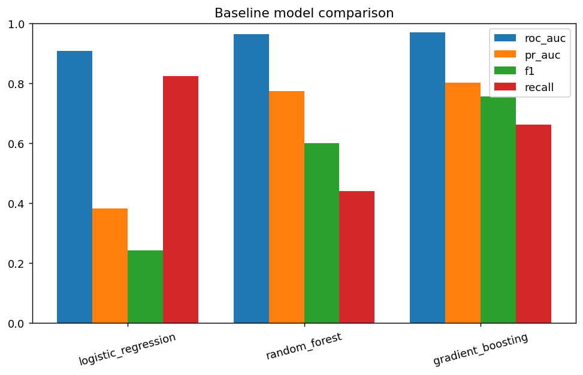
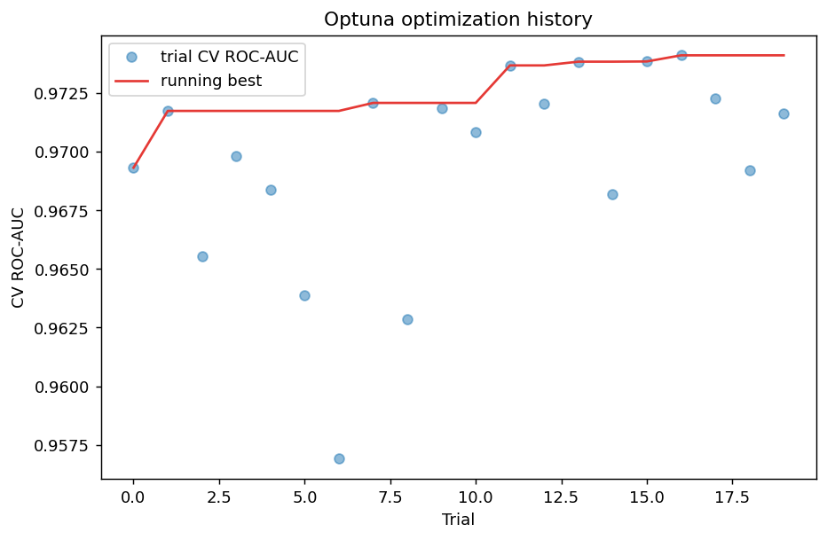
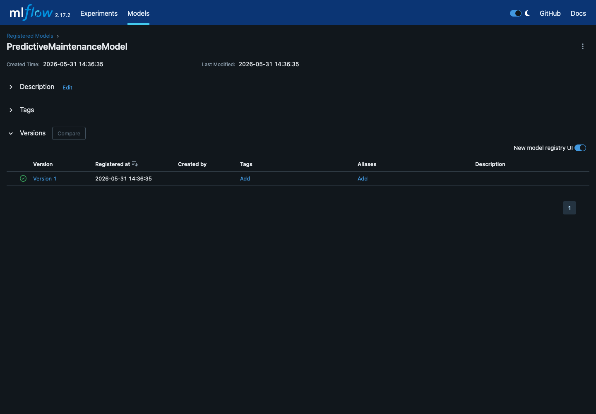
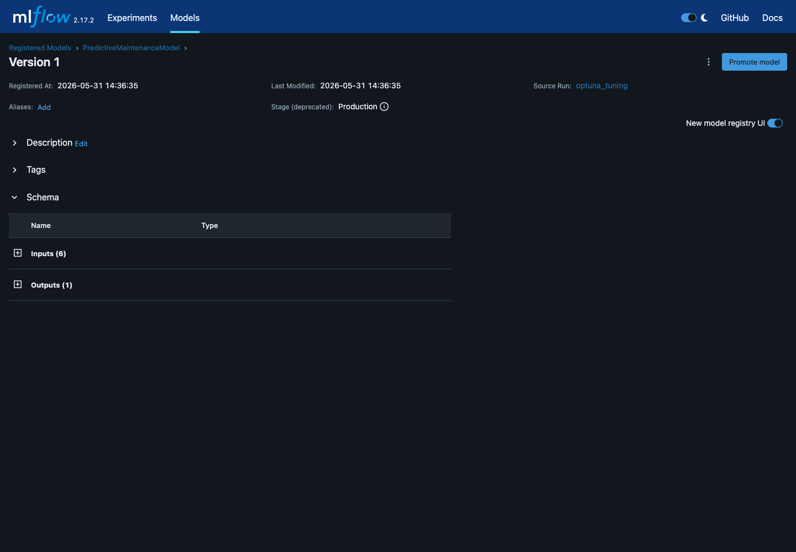
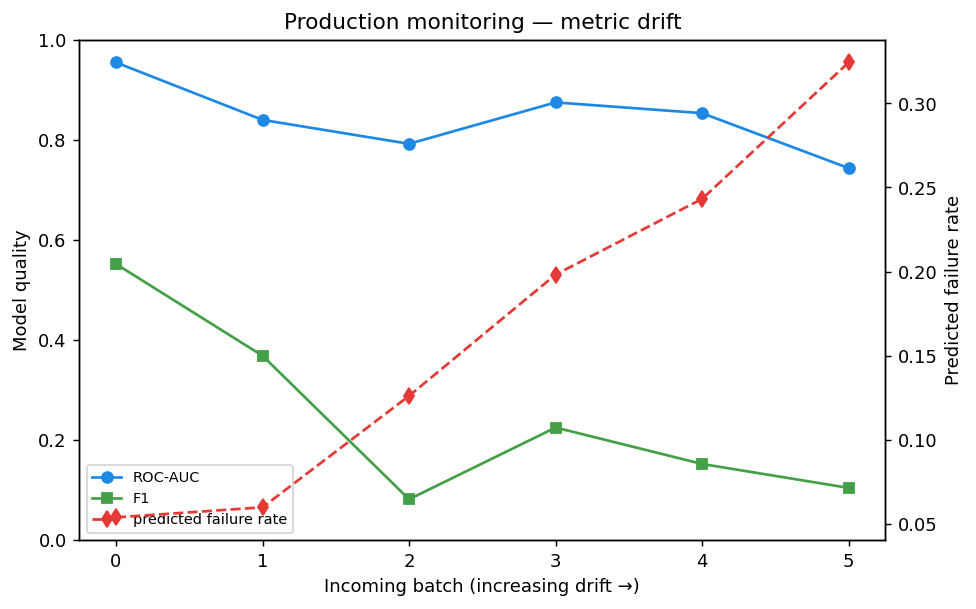

Predictive Maintenance
End-to-End ML Lifecycle on Azure ML + MLflow
Course: AIN-3009 Delivering AI Applications with MLOps
Instructor: Dr. Gökşin Bakır
Student: Ayhan Gurbangeldiyev — 2020053
Dataset → Training → Tuning → Registry → Endpoint → Monitoring
Project Objective
The assignment asks for full ML lifecycle management, not only model training.
| Objective | Project evidence |
|---|
| Experiment tracking | MLflow params, metrics, artifacts, outputs |
| Training + tuning | 3 baselines + Optuna 20 trials |
| Deployment | Azure ML Managed Online Endpoint |
| Monitoring | Drifted batches logged back to MLflow |
| Registry | Version 1, Staging → Production |
Dataset & Problem Framing
- AI4I 2020 predictive-maintenance dataset
- 10,000 machine telemetry records
- Target:
Machine failure
- Failure rate: 3.4%
- Leakage columns removed: TWF, HDF, PWF, OSF, RNF

Accuracy alone is misleading; use ROC-AUC, PR-AUC, recall, F1.
Data Preparation & EDA


- Numeric features → StandardScaler
- Machine type → OneHotEncoder
- Preprocessing + estimator serialized as one scikit-learn Pipeline
Architecture: Local Training, Cloud Lifecycle
Local machine (train + tune)
│ mlflow.set_tracking_uri(azureml://...)
▼
Azure ML Workspace
├─ Experiments / params / metrics / artifacts
├─ Model Registry (Staging → Production)
▼
Managed Online Endpoint → REST /score
▲
Monitoring metrics logged back to MLflow
Azure credit is used for tracking, registry, and endpoint deployment; training stays local for cost control.
Training, Tracking & Tuning


20 Optuna trials · best CV ROC-AUC 0.974 · recall 0.44 → 0.77
Registry, Deployment & Pipeline Automation


- Registered model:
PredictiveMaintenanceModel
- Version: 1
- Lifecycle: Staging → Production
- Endpoint:
predmaint-endpoint, state Succeeded
- Airflow DAG: validate → train → tune → register → monitor
Monitoring Closes the Loop

- Incoming batches simulate sensor drift
- ROC-AUC falls from about 0.91 to 0.77
- Predicted failure rate rises from about 4% to 37%
- This becomes a retraining trigger signal.
Final takeaway: this is an end-to-end MLflow + Azure ML lifecycle demonstration.